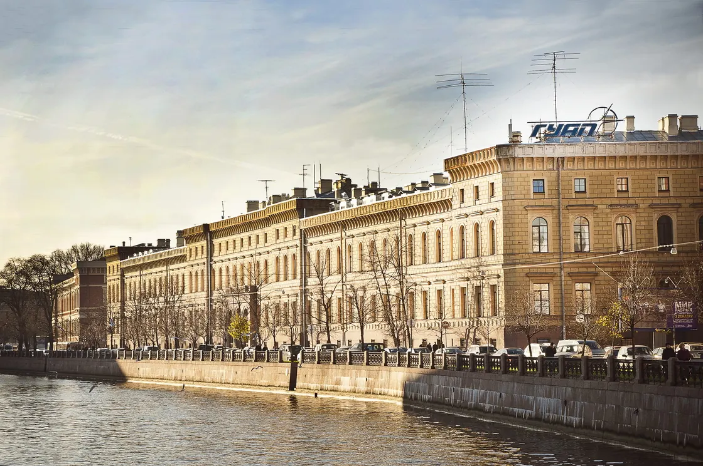

Большая Морская, 67
Главный корпус на набережной Мойки, напротив Юсуповского дворца.
Метро Адмиралтейская, Садовая, Сенная площадь, Спасская
Санкт-Петербург
Адреса четырёх учебных корпусов, ближайшее метро и ориентиры по дороге.
Найти свой корпус
Главный корпус на набережной Мойки, напротив Юсуповского дворца.
Метро Адмиралтейская, Садовая, Сенная площадь, Спасская
Чесменский дворец между Московским проспектом и Чесменской церковью.
Метро Московская
Учебный корпус рядом с Чесменской церковью и корпусом на Гастелло.
Метро Московская
Учебный корпус факультета среднего профессионального образования и Инженерной школы.
Метро Электросила, Парк Победы